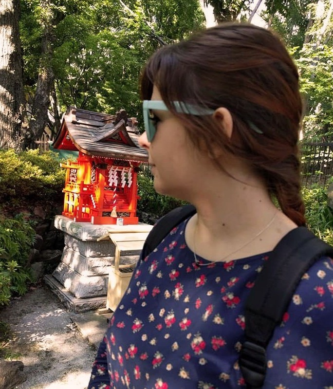

Notre équipe de fins gourmets

Justine Pain
Intéressée par la pâtisserie depuis mon plus jeune âge, j'ai d'abord apprécié participer à la confection de gâteaux avec mes parents.
Plus tard, j'ai aimé parcourir les livres de recette et m'en inspirer pour créer mon propre livre de cuisine, regroupant toutes mes recettes favorites.
J'aime découvrir de nouvelles saveurs en fonction du pays où je voyage, je ne me lasse jamais de goûter de nouveaux plats !
Ses articles

Christophe Castan
Amoureux de ma région et passionné de cuisine, je vous donne tous mes secrets culinaires, sans détour.
Je cherche à rendre hommage aux traditions, de la brandade de Nîmes à la fougasse d'Aigues-Mortes.
Sommelier de métier, je vous fais partager, au fil des pages de ce site, mes vins préférés et les plus appropriés pour apprécier pleinement chaque recette.
Comme l'a si bien dit Julia Child : "On ne peut avoir de culture gastronomique sans vin."
Ses articles

Corentin Crébier
Amateur de pâtisserie, j'ai toujours apprécié les saveurs sucrées mais cela ne m'empêche pas d'apprécier le monde de la cuisine salée, notamment les plats asiatiques.
Ses articles

Floran Eiclies
Élevé avec la cuisine du pourtour méditérannéen, je suis aujourd'hui curieux de découvrir les cuisines et les ingrédients des quatre coins du globe.
J'aime les épices, l'acidité et le sucré. Mais surtout mélanger les goûts et les textures.
Je n'aime pas l'amertume.
Ses articles
Crédits
Tous les textes ont été rédigés par notre équipe.
Les photos ont été en majorité prises par notre équipe. Toutefois, nous remercions ces aimables photographes d'avoir partagé leurs photos:
Hello I'm Nik, Edgar Castrejon Vladimir Proskurovskiy